Naive Bayes is classifier model that uses probability for classification, and has a major assumption (thus, the “Naive” name) that features are conditionally independent given the class. This model uses the concepts from Bayes theorem:
\(P(K | X) = \displaystyle \frac{P(X | K) \cdot P(K)}{P(X)}\)
With \(P(K | X)\) representing the posterior probability of class \(K\) given the data, \(X\); \(P(X | K)\) representing the likelihood of the data features \(X\) given the class \(K\); \(P(K)\) is the prior probability of the class \(K\); and \(P(X)\) is the evidence. Because of the feature independence assumption, the likelihood calculation ends up being \(\prod_i P(X_i | K)\). Naive Bayes can be done using binary features (Bernoulli NB), count features (Multinomial NB) and continuous features (Gaussian NB).
K-Nearest Neighbors is a supervised learning method where data points are classified based on a plurality vote of its K (positive integer) nearest neighbors. As it is based on distance, numerical features are necessary and should be scaled prior to training. The choice of K can be tuned during training.
Data files are found here.
For classification methods, a classifier response was created. Is High Price was added as a feature based on the product’s median price. For decision tree classification here, another method was considered.
To use Bernoulli Naive Bayes, binary features were selected:
binary_features_iphone = ["topRatedBuyingExperience", "priorityListing", "discount_flag",
"unlocked"]
binary_features_lego = ["is_prime", "sponsored", "has_coupon", "top_theme"]
response = "is_high_price"
As discussed in the Data Prep / EDA tab, some of these binary features were from the original data, like “Top Rated Buying Experience” and “Priority Listing” for the eBay data, and “Is Prime”, “Sponsored”, “Is Small Business” and “Has Coupon” for the Amazon data. Others, like “Discount Flag” and “Top Club” were created to enhance the data exploration.
For Gaussian Naive Bayes and K-Nearest Neighbors, numerical features were selected:
num_features_iphone = ["seller.feedbackPercentage", "seller.feedbackScore", "days_listed",
"seller_item_count", "model_number", "additional_image_count", "title_length"]
num_features_lego = ["rating", "ratings_total", "recent_sales_num", "discount$",
"discount%"]
response = "is_high_price"
Similar to the binary features, some numerical features were obtained from the original data, and some were created (like “Seller Item Count”, “Additional Image Count”, “Title Length” and “Discount$" and "%”).
There is another Naive Bayes model, Multinomial, which is used for count data. Some of the numerical features are counts (e.g. seller item count) and others are more continuous (feedback score). All numerical features were scaled and thus the Gaussian NB was used for the below analysis.
All data sets were split into training and testing sets (80/20 split), for example:
from sklearn.model_selection import train_test_split
X_train_iphone, X_test_iphone, y_train_iphone, y_test_iphone = train_test_split(df_iphone[num_features_iphone], df_iphone[response],
test_size=0.20, random_state=1216)
A link to the full code for this analysis is found here.
For classification methods, the following metrics on the test set were considered along with the confusion matrix visual: accuracy, the percentage of correctly classified points; recall, the percentage of true positives (how many true positives were accurately predicted?); and the F1 score, which is a mix of recall and precision (how many predicted positives are actually positive?).
For Naive Bayes analysis on the iPhone data, the following was noted:
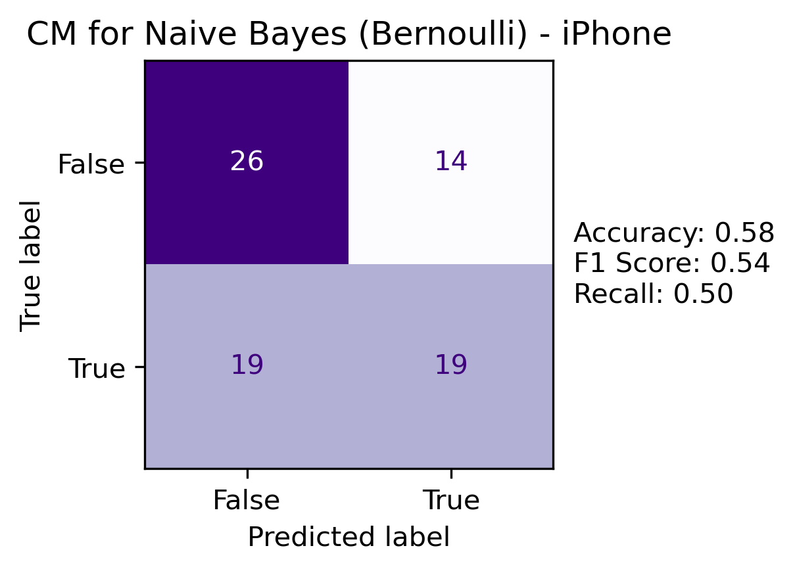 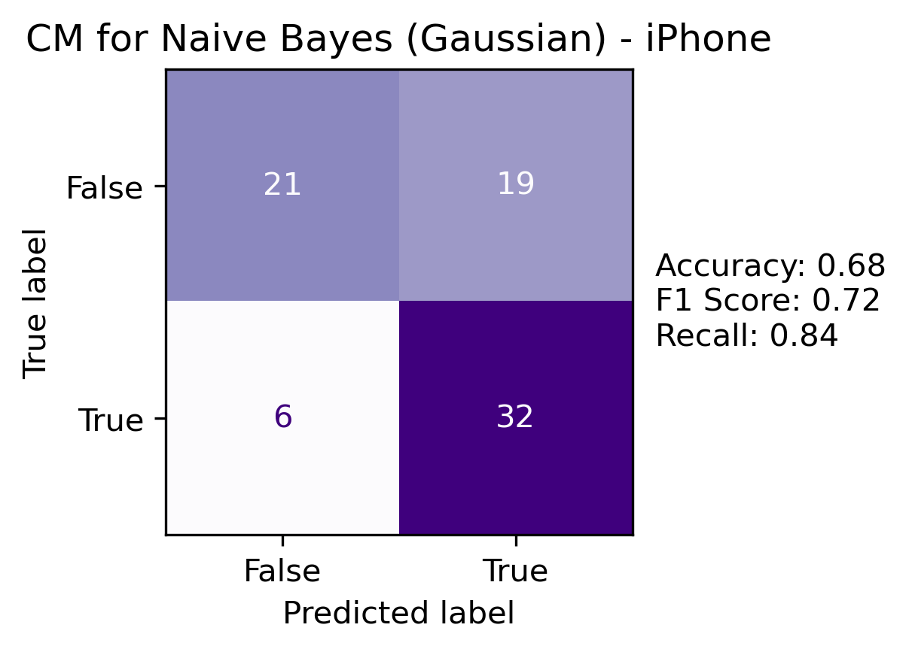
All metrics improved on the Gaussian model. For the Bernoulli model, recall (how many true positives were accurately predicted) was worse than overall accuracy while for the Gaussian model, it was significantly better. Note that this model is for predicting price buckets and there is not a high risk of low recall (as there would be in medical detection or fraud cases).
As discussed here, PCA is a technique to reduce dimensionality by creating new features that are linear combinations of the originals. The new features are orthogonal to each other; therefore, non-correlated. Note that this does not mean independence; however, it was of interest to see if there were any differences in the PCA converted data.
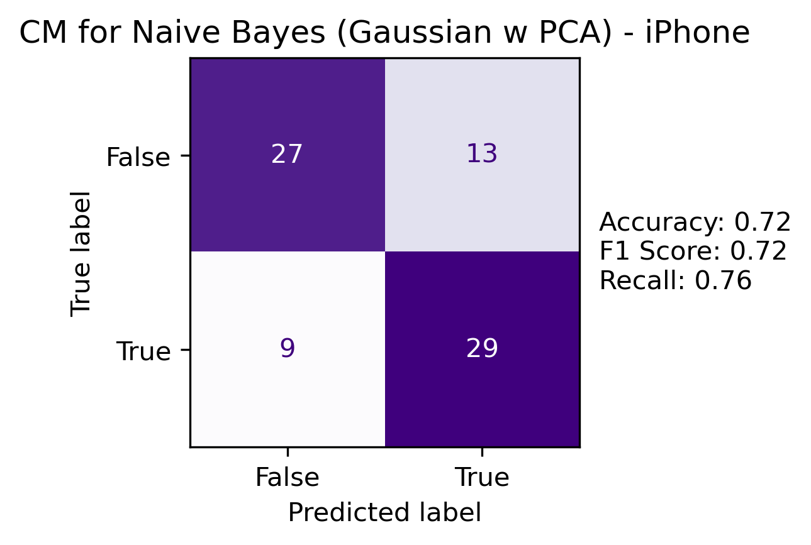
Accuracy improved using PCA projected data in a Gaussian NB model. This may indicate the consolidation of features into PCA projections reduced correlation compared with the originals.
A KNN model was run on various k values with the following:
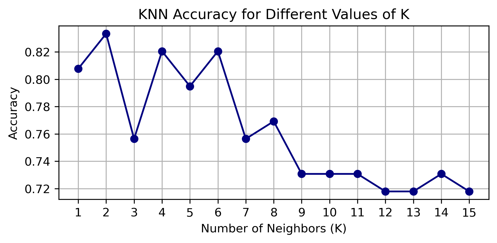
With k=2, accuracy, recall and F1 score all improved over Naive Bayes.
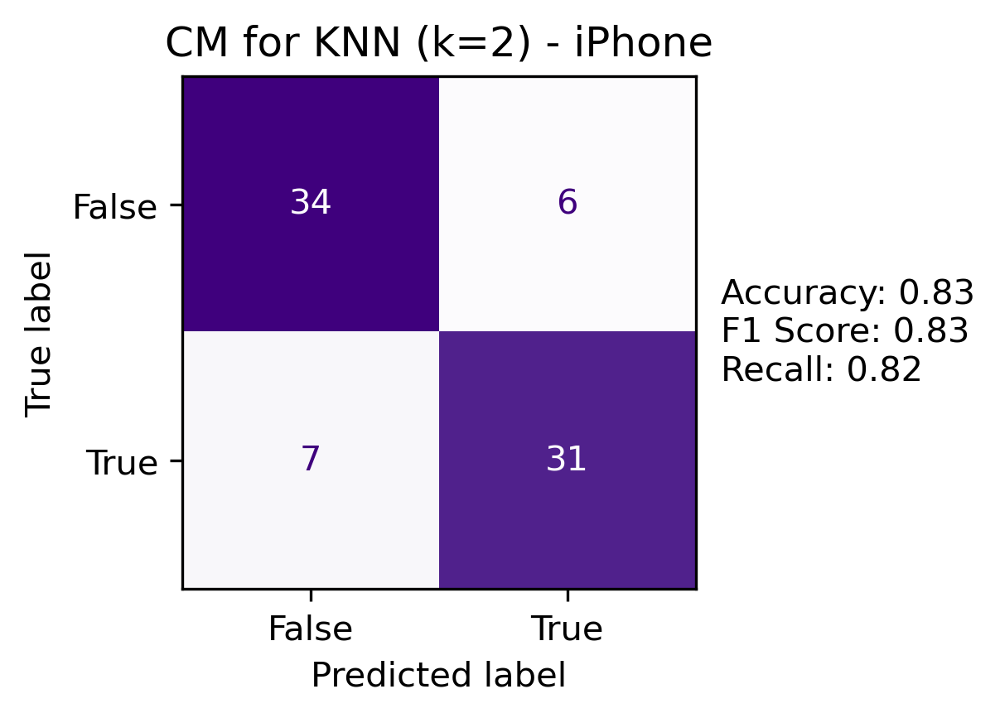
After projecting into 2D with PCA, the true and predicted labels using KNN were plotted:
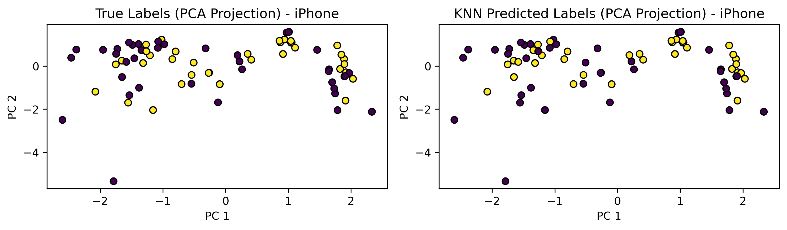
For Naive Bayes analysis on the Lego data, the following was noted:
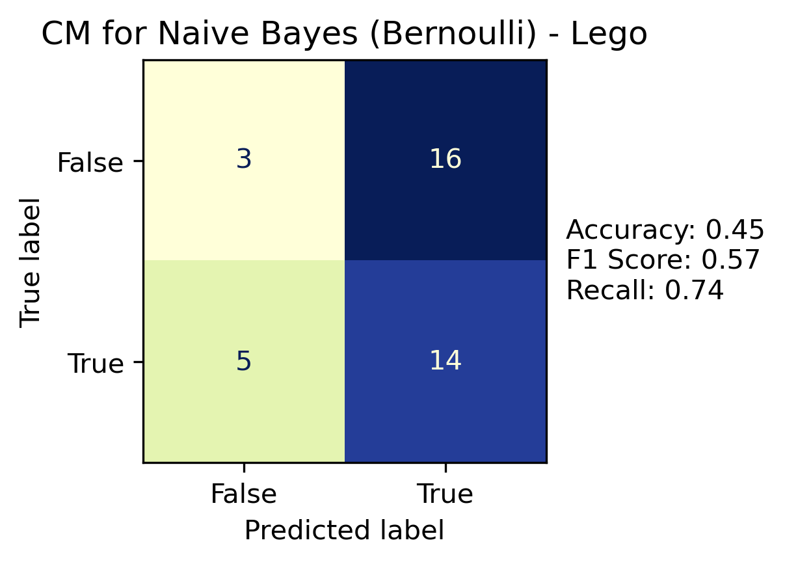 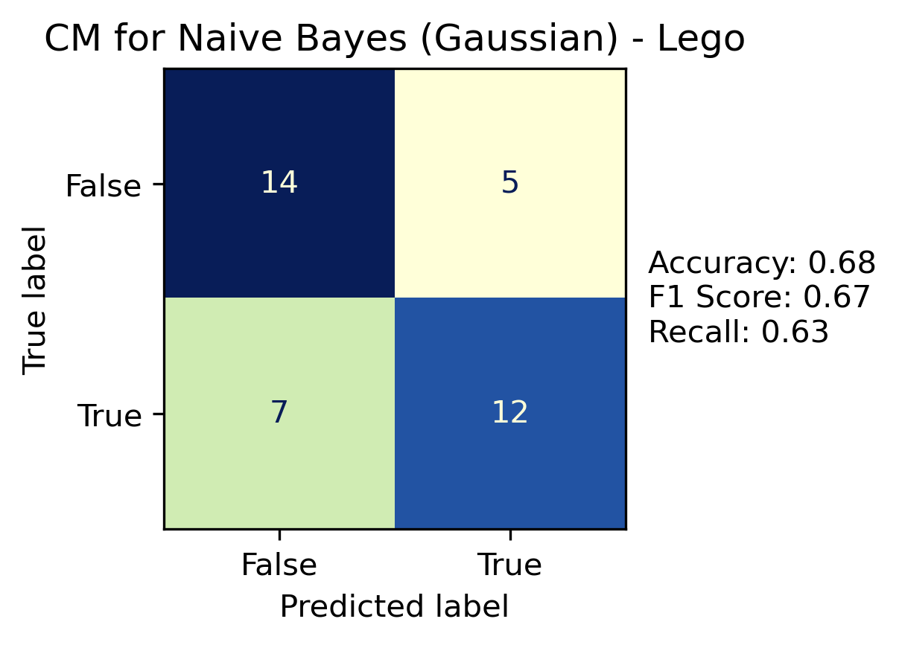
The Bernoulli model had mixed results – accuracy was poor and recall was significantly higher. This shows that the model thinks most items are true (price should be higher than median). The Gaussian model had more consistent metrics. For this data, the binary features are not good predictors by themselves.
Similar to the iPhone data, a Gaussian NB using PCA projected features (5) was created.
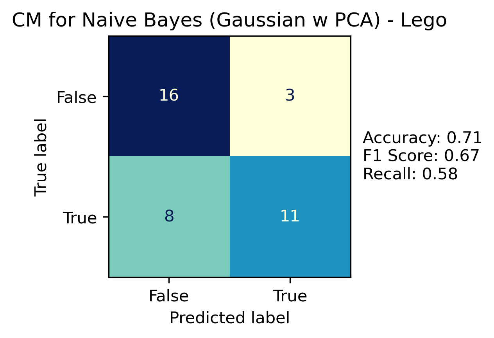
While accuracy improved over the Gaussian NB on original features, recall percentage went down (there were more false negatives). It is unclear whether the PCA projected features improve this model; or if this data just does not fit with a Naive Bayes approach.
A KNN model was run on various k values with the following:
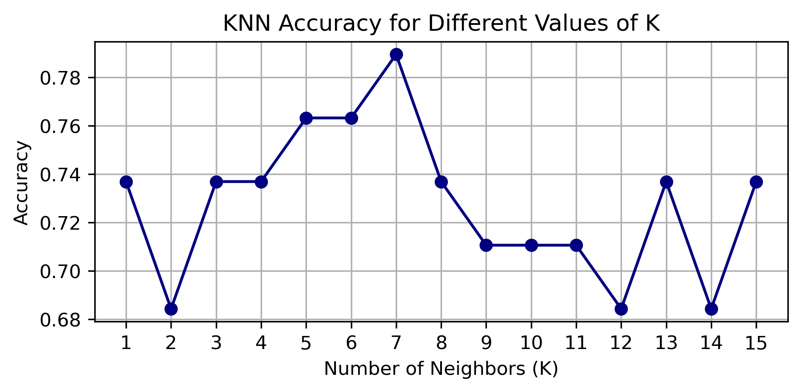
With k=7, again, accuracy, recall and F1 score all improved over Naive Bayes.
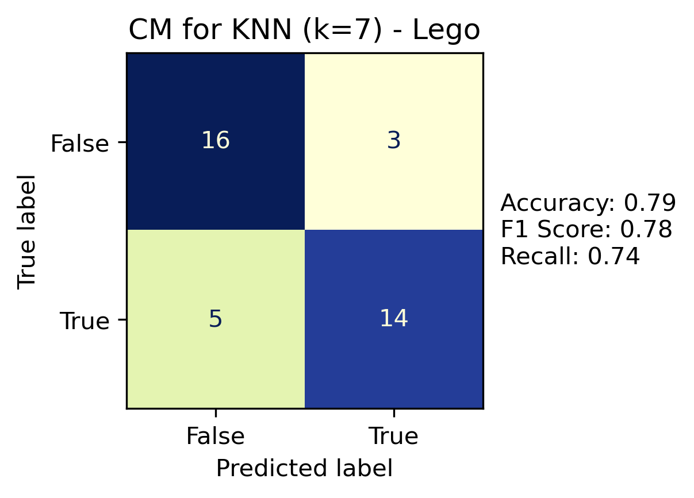
After projecting into 2D with PCA, the true and predicted labels using KNN were plotted:
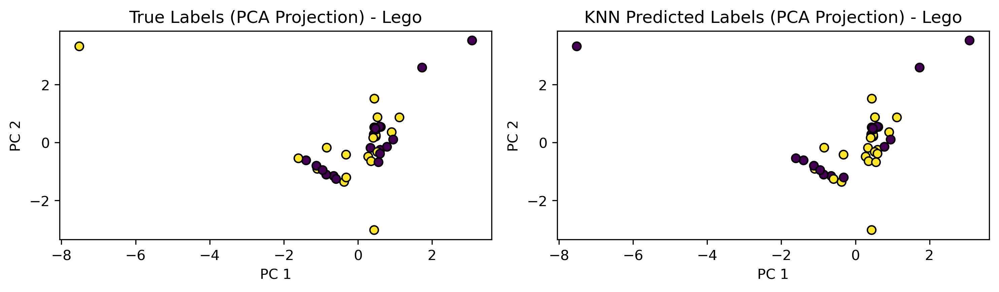
The Naive Bayes models had mixed results. This is expected due to the nature of the data. Since the features are pulled from product listings that sellers post with much of their own supplied information, it is not reasonable to expect that there would be the necessary independence. What was interesting is that, depending on the product data, the models either under or overpredicted the positive class when compared to overall accuracy. There are differences in the feature sets of these products.
K-Nearest Neighbors outperformed Naive Bayes for both data sets. This model allows for the flexibility to find local patterns in the data. The best k value was tuned and was different for both data sets (k=2 for iPhones, k=7 for Lego). KNN could be explored for different classification responses (e.g. Priority Listing true/false). Naive Bayes should likely not be pursued further in this analysis.